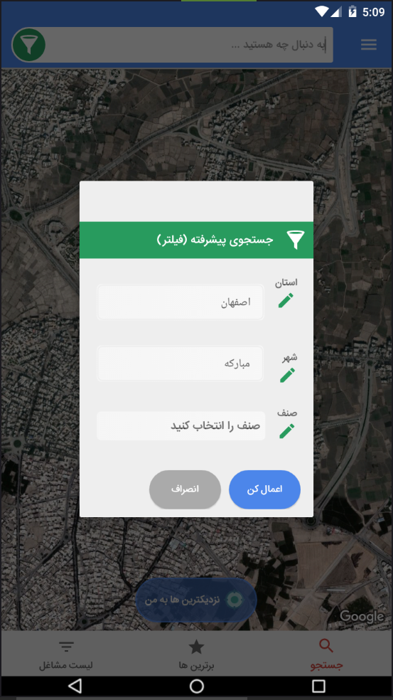
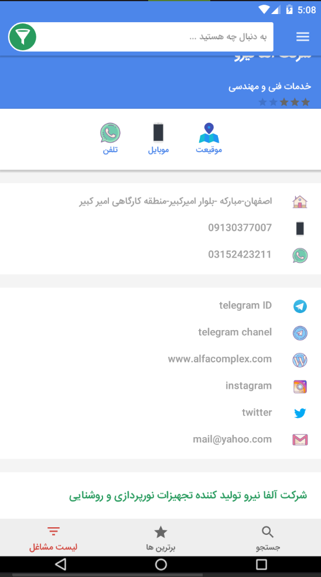
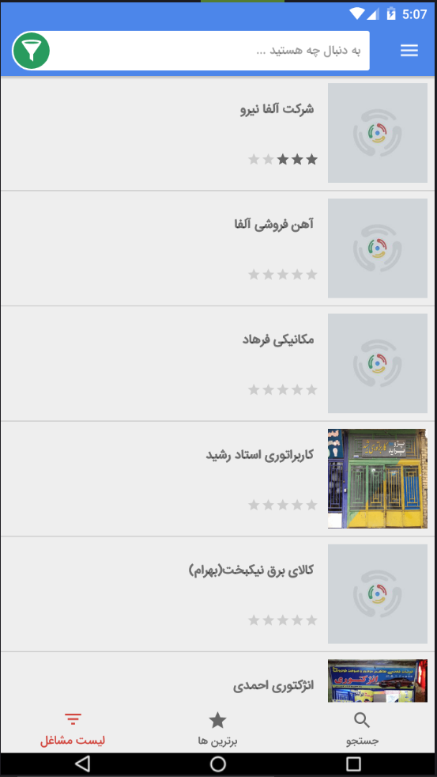

<div class="row rtl mt-4 mx-3">
  <div class="col-12">
    <div class="dx-card responsive-paddings mb-3 cushy_help">
      <h1>راهنمای استفاده از اپلیکیشن کوشی</h1>

      <h3>صفحه اول برنامه</h3>
      <p>
          موقعی که برنامه باز میشود با صفحه زیر روبرو میشویم، که در نگاه اول خود برنامه تمامی مشاغلی که نزدیک شما هستند را به نمایش میگذارد (شعاع 20 کیلومتر) که همان آیکن های قرمز رنگ هستند
      </p>
      
      <p>
          با زدن دکمه "نزدیکترین ها به من" تمامی مشاغلی که نزدیک شما هستند را با خط قرمز رنگی نمایش میدهد. که شما میتوانید بین آنها حرکت کنید با کلیک روی گزینه "بعدی" و "قبلی" براحتی هرچه تمام تر. در این قسمت اگر روی گزینه "اطلاعات بیشتر" بزنید تمامی اطلاعات مربوط به آن شغل را به شما نمایش میدهد و اگر روی گزینه "مسیر رسیدن" بزنید به صورت گرافیکی از مبدا تا مقصد را خط کشی میکند و شما براحتی میتوانید نزدیک ترین مسیر رسیدن به مقصد را پیمایش کنید
          
      </p>
      
          
      <h3> جستجوی پیشرفته</h3>
      <p>
          در کوشی جستجویی قرار دادیم تا بر اساس استان و شهر و نوع صنف بتوانید فیلتر کنید. برای دسترسی به این قسمت باید روی گزینه سبز رنگ با آیکن فیلتر کلیک کنید تا پنجره آن باز شود.
      </p>
      

      <h3>گزینه اطلاعات بیشتر</h3>
      <p>
          تمامی اطلاعات مربوط به آن شغلی که انتخاب کردید را به شما نمایش میدهد. مثل تصاویر، تلفن، موبایل، آدرس، شبکه های اجتماعی، وب سایت و ایمیل و ... همچنین میتوانید در پایین صفحه اطلاعات تکمیلی این شغل را مطالعه کنید
      </p>
          
          
          
        <h3>لیست مشاغل</h3>
        <p>    
              گزینه "لیست مشاغل" که در پایین صفحه قرار دارد، تمامی مشاغل ثبت شده را به ترتیب رتبه بندی لیست میکند و شما میتوانید مشاغل را از رتبه 5 به پایین مشاهده کنید
              
          </p>
          
         
        <p>
            امیدبخدا در آپدیت های بعدی که بزودی اعمال میشود موارد بسیاری قرار است به برنامه اضافه گردد. منتظر باشید...

        </p>
           
          
         
        
        
             
        
        
         
    </div>
  </div>
</div>
